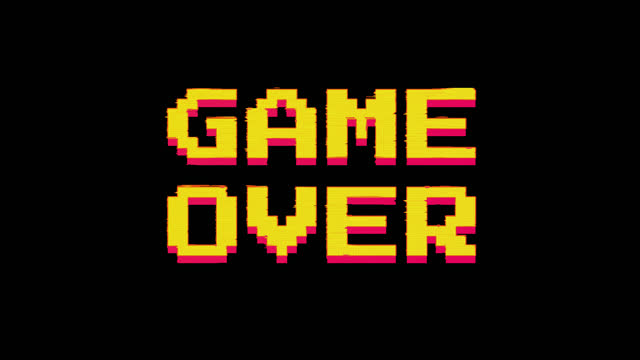

<app-player (click)="editPlayer(i)" *ngFor="let player of game.players; let i = index" [ngStyle]="{ 'top.px': 20 + i * 60 }"
  [playerActive]="i == game.currentPlayer" [image]="game.playerImages[i]" [name]="player" class="player-position">
</app-player>

<div class="game-over" *ngIf="gameOver">
  
</div>

<div *ngIf="!gameOver" class="game-field">
  <!--mit ngStyle kann man direkt ein cssStyle hinzufügen. Hier Abstand rechts, da i 0-3 ist = Absatand = i*5px-->
  <!--ngFor ist eine Forschleife, sie lässt die Karte 5x anzeigen-->
  <div class="card-stack">
    <!--cardstack-->
    
    

    <!--stack for played cards-->
    

    <!--current card (animation)-->
    
  </div>
</div>

<app-game-info [card]="game.currentCard"></app-game-info>

<button mat-fab color="primary" (click)="openDialog()" class="btn-add">
  <mat-icon>add</mat-icon>
</button>
